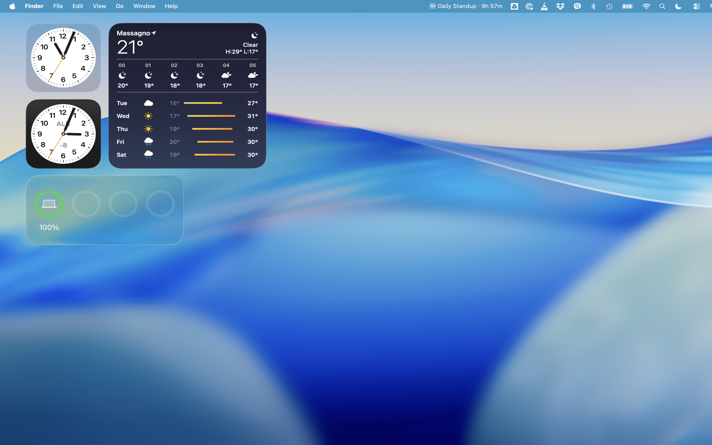
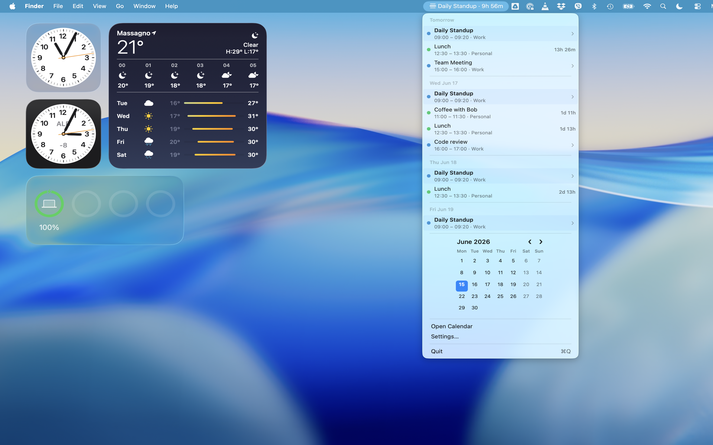
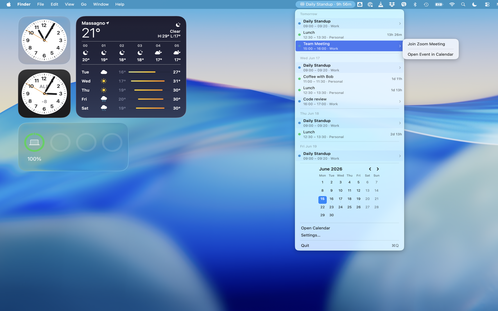
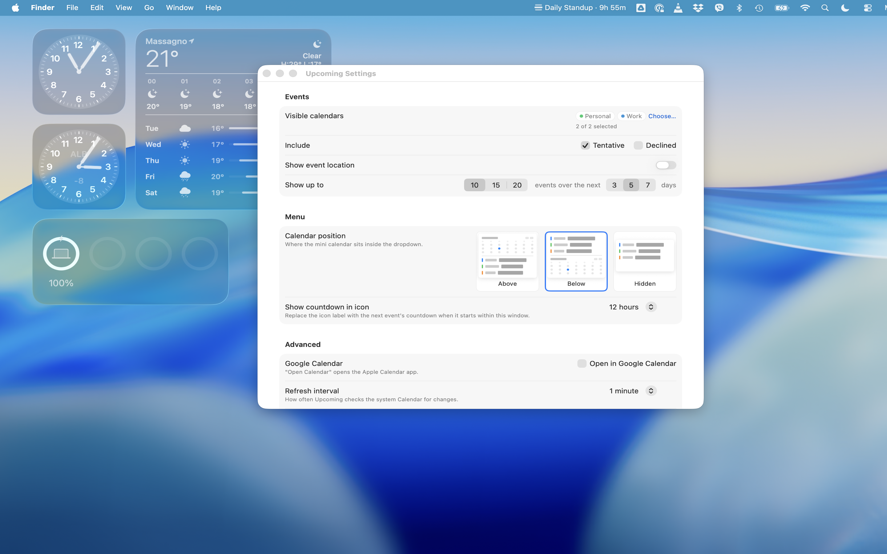

Upcoming
Upcoming is a lightweight, native macOS menu bar app that brings your Apple Calendar events directly into view.
Stay on top of your schedule and join meetings instantly without having to open the full Calendar application.
Features
- Menu Bar Integration: Displays the current day or a real-time countdown to your next event directly in your status bar.
- Clean Event List: Click the menu bar icon to view an organized agenda for today and the coming days.
- One-Click Meeting Links: Detects virtual meeting links (Zoom, Google Meet, Microsoft Teams, etc.) and allows you to join directly from the dropdown.
- Native Performance: Built with Swift and SwiftUI for optimal efficiency and minimal resource usage on macOS.
- Calendar Synchronization: Integrates directly with your macOS Calendar database for seamless updates.
- Customize Your View: Choose which calendars to display, set the event refresh rate, and configure display preferences.
Privacy-First
Upcoming runs entirely on your local machine. It uses the native macOS EventKit framework to fetch calendar data and runs in a sandbox.
Your data is never collected, stored, or transmitted to external servers.
Privacy Policy (Web)
Privacy Policy (Markdown)
Requirements
- macOS 12.0 (Monterey) or later
- Calendar access permission
Screenshots



